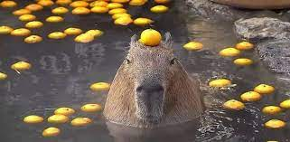

История обо мне
Меня зовут Илья. И мой ник Borodinsky.
Мои любимые предметы
- Интернет программирование
- Разработка информационных систем в 1c
Мои любимые фильмы, книги, видео на сегодня
- Джентельмены КИНОПОИСК
- Толстой Алексей Николаевич.Колобок русская народная сказка OZON
- ПОСЛЕ ЭТОГО ИЗБА СТАЛА В 100 РАЗ УЮТНЕЕ. ОХОТА У БЛИЖНЕЙ ИЗБЫ. YOUTUBE
Мое счастье и грусть
Счастье 
Грусть